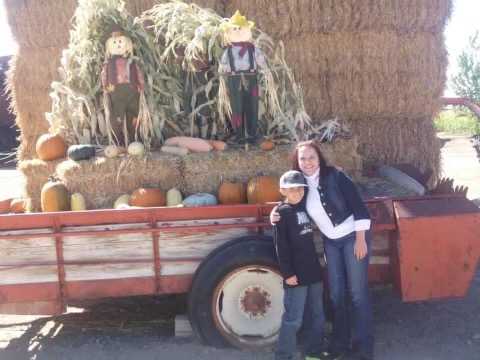

The Gardener
My mom loves to plant. She was able to get 5 HUGE pumpkins her first year of gardening.
Jokes aside, my mother is the most important person in my life. She taught the high values of education and kept pushing me to move forward. It is really hard (For me at least) to describe the feeling that a son has towards a mother. But I adore and love my mother, she is an inspiration to everything I do. Ever since I can remember, my mother has been a strong individual. She has been raising my sister and I financially, emotionally, physically and spiritually by herself. I love you Mom! :)